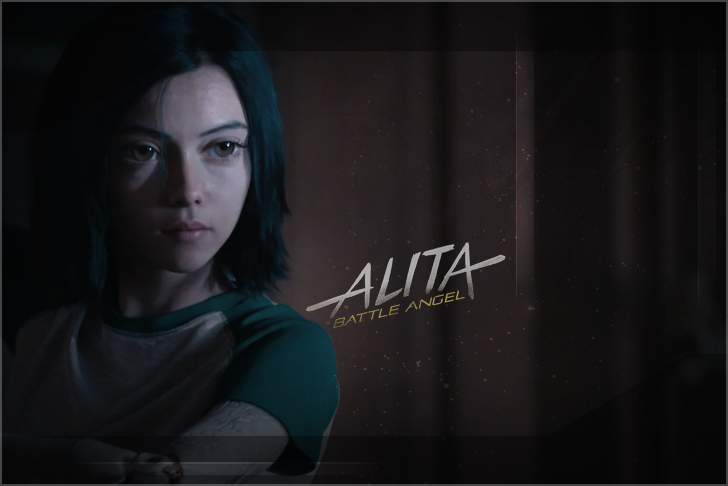

Creado Por alita
Mas Conocida en el mundo del Xat Como Alita. Durante un largo tiempo se a dedicado a perfeccionar sus fondos para xat , haciendos muchos de ellos con detalles precisos segun el cliente lo requiera.
Ahora tambien pone a sus disposicion reproductores HTML5 para sala o grupos de xat.